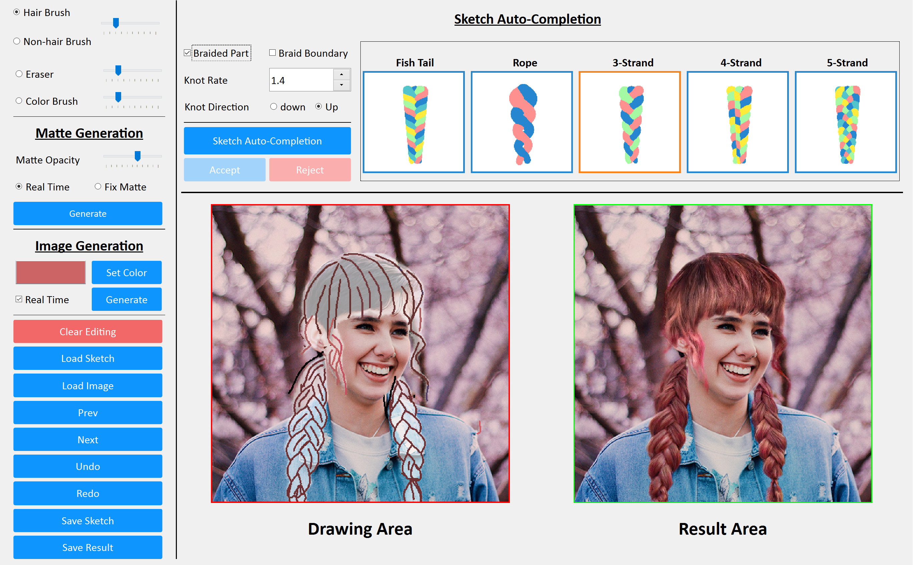
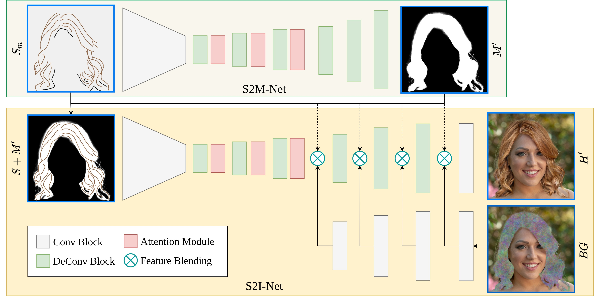

SketchHairSalon: Deep Sketch-based Hair Image Synthesis
Chufeng Xiao
1 School of Creative Media, City University of Hong Kong
2 SSE, The Chinese University of Hong Kong, Shenzhen
3 State Key Lab of CAD&CG, Zhejiang University
* Corresponding author
Accepted by SIGGRAPH Asia 2021
[Paper] [Dataset & Code] [Supplemental Material] [Video]

Fig 1: Our SketchHairSalon system allows users to easily create photo-realistic hair images with various hairstyles (e.g., straight, wavy, braided) from freehand sketches (Left-Top in each example), containing colored hair strokes and non-hair strokes (in black). Our two-stage framework automatically generates both hair mattes (Left-Bottom in each example) and hair images (Right in each example) directly from such sketches.
Abstract
Recent deep generative models allow real-time generation of hair images from sketch inputs. Existing solutions often require a user-provided binary mask to specify a target hair shape. This not only costs users extra labor but also fails to capture complicated hair boundaries. Those solutions usually encode hair structures via orientation maps, which, however, are not very effective to encode complex structures. We observe that colored hair sketches already implicitly define target hair shapes as well as hair appearance and are more flexible to depict hair structures than orientation maps. Based on these observations, we present SketchHairSalon, a two-stage framework for generating realistic hair images directly from freehand sketches depicting desired hair structure and appearance. At the first stage, we train a network to predict a hair matte from an input hair sketch, with an optional set of non-hair strokes. At the second stage, another network is trained to synthesize the structure and appearance of hair images from the input sketch and the generated matte. To make the networks in the two stages aware of long-term dependency of strokes, we apply self-attention modules to them. To train these networks, we present a new dataset containing thousands of annotated hair sketch-image pairs and corresponding hair mattes. Two efficient methods for sketch completion are proposed to automatically complete repetitive braided parts and hair strokes, respectively, thus reducing the workload of users. Based on the trained networks and the two sketch completion strategies, we build an intuitive interface to allow even novice users to design visually pleasing hair images exhibiting various hair structures and appearance via freehand sketches. The qualitative and quantitative evaluations show the advantages of the proposed system over the existing or alternative solutions.
Interface

Fig. 2: A screenshot of our sketching interface for realistic hairstyle design. The colored lines indicate hair strokes, while the black ones represent non-hair strokes. This example includes both the braided and unbraided parts. Note that the braid sketch is automatically generated given a small number of user-specified strokes. Both the sketch-to-matte and sketch-to-image stages are completely controlled via sketching.
Pipeline

Fig. 3: The pipeline of our SketchHairSalon, a two-stage framework for sketch-based hair image synthesis from coarse to fine. Given a hair sketch, the first stage S2M-Net focuses on hair matte generation (Top). Then the generated matte representing a target hair shape is fused with the hair sketch indicating the local structure of a certain hairstyle. Based on that, the second stage S2I-Net manages to synthesize a realistic hair image (Bottom), by blending the background region on the feature levels guided by the generated matte. The background input (in the bottom-right corner) is derived by replacing the hair region of the original image with Gaussian noise. Both S2M-Net and S2I-Net apply the self-attention modules to capture the long-range dependencies of the input sketch. Note that {we use skip connections, which are omitted in the figure for simplicity.
Video
Media - Two Miniute Papers
Citation
xxxxxxxxxx@article{xiao2021sketchhairsalon, title={SketchHairSalon: Deep Sketch-based Hair Image Synthesis}, author={Chufeng Xiao and Deng Yu and Xiaoguang Han and Youyi Zheng and Hongbo Fu}, journal = {ACM Transactions on Graphics (Proceedings of ACM SIGGRAPH Asia 2021)}, volume={40}, number={6}, pages={1--16}, year={2021}, publisher={ACM New York, NY, USA}}